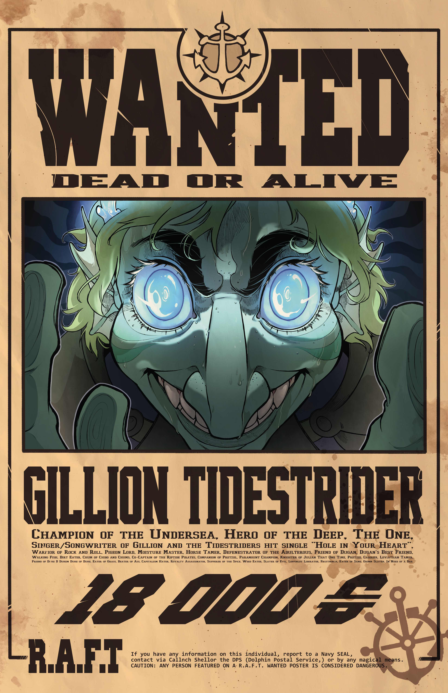

Gillion Tidestrider

| Strength |
Intelligence |
Dexterity |
Wisdom |
Constitution |
Charisma |
Health Points |
Armor Class |
| 19 |
8 |
6 |
12 |
18 |
18 |
124 |
22 |
Gillion Trivia
- Despite being one, Gillion doesn't know what a pirate is and believes himself to be a hero
- Gillion was banished from his home for attacking a Navy officer during negotiaions
- Gillion's close friend and companion is Pretzel; a pink frogtopus who remains by Gillion's side and undefeated at chess
- As a fish man, Gillion does not get along with cats